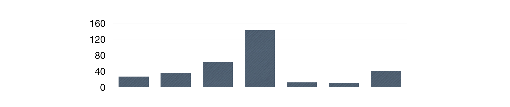

PromQL内置函数
在上一小节中，我们已经看到了类似于irate()这样的函数，可以帮助我们计算监控指标的增长率。除了irate以外，Prometheus还提供了其它大量的内置函数，可以对时序数据进行丰富的处理。本小节将带读者了解一些常用的内置函数以及相关的使用场景和用法。
计算Counter指标增长率
我们知道Counter类型的监控指标其特点是只增不减，在没有发生重置（如服务器重启，应用重启）的情况下其样本值应该是不断增大的。为了能够更直观的表示样本数据的变化剧烈情况，需要计算样本的增长速率。
如下图所示，样本增长率反映出了样本变化的剧烈程度：

increase(v range-vector)函数是PromQL中提供的众多内置函数之一。其中参数v是一个区间向量，increase函数获取区间向量中的第一个后最后一个样本并返回其增长量。因此，可以通过以下表达式Counter类型指标的增长率：
increase(node_cpu[2m]) / 120
这里通过node_cpu[2m]获取时间序列最近两分钟的所有样本，increase计算出最近两分钟的增长量，最后除以时间120秒得到node_cpu样本在最近两分钟的平均增长率。并且这个值也近似于主机节点最近两分钟内的平均CPU使用率。
除了使用increase函数以外，PromQL中还直接内置了rate(v range-vector)函数，rate函数可以直接计算区间向量v在时间窗口内平均增长速率。因此，通过以下表达式可以得到与increase函数相同的结果：
rate(node_cpu[2m])
需要注意的是使用rate或者increase函数去计算样本的平均增长速率，容易陷入“长尾问题”当中，其无法反应在时间窗口内样本数据的突发变化。 例如，对于主机而言在2分钟的时间窗口内，可能在某一个由于访问量或者其它问题导致CPU占用100%的情况，但是通过计算在时间窗口内的平均增长率却无法反应出该问题。
为了解决该问题，PromQL提供了另外一个灵敏度更高的函数irate(v range-vector)。irate同样用于计算区间向量的计算率，但是其反应出的是瞬时增长率。irate函数是通过区间向量中最后两个样本数据来计算区间向量的增长速率。这种方式可以避免在时间窗口范围内的“长尾问题”，并且体现出更好的灵敏度，通过irate函数绘制的图标能够更好的反应样本数据的瞬时变化状态。
irate(node_cpu[2m])
irate函数相比于rate函数提供了更高的灵敏度，不过当需要分析长期趋势或者在告警规则中，irate的这种灵敏度反而容易造成干扰。因此在长期趋势分析或者告警中更推荐使用rate函数。
预测Gauge指标变化趋势
在一般情况下，系统管理员为了确保业务的持续可用运行，会针对服务器的资源设置相应的告警阈值。例如，当磁盘空间只剩512MB时向相关人员发送告警通知。 这种基于阈值的告警模式对于当资源用量是平滑增长的情况下是能够有效的工作的。 但是如果资源不是平滑变化的呢？ 比如有些某些业务增长，存储空间的增长速率提升了好几倍。这时，如果基于原有阈值去触发告警，当系统管理员接收到告警以后可能还没来得及去处理问题，系统就已经不可用了。 因此阈值通常来说不是固定的，需要定期进行调整才能保证该告警阈值能够发挥去作用。 那么还有没有更好的方法吗？
PromQL中内置的predict_linear(v range-vector, t scalar) 函数可以帮助系统管理员更好的处理此类情况，predict_linear函数可以预测时间序列v在t秒后的值。它基于简单线性回归的方式，对时间窗口内的样本数据进行统计，从而可以对时间序列的变化趋势做出预测。例如，基于2小时的样本数据，来预测主机可用磁盘空间的是否在4个小时候被占满，可以使用如下表达式：
predict_linear(node_filesystem_free{job="node"}[2h], 4 * 3600) < 0
统计Histogram指标的分位数
在本章的第2小节中，我们介绍了Prometheus的四种监控指标类型，其中Histogram和Summary都可以用于统计和分析数据的分布情况。区别在于Summary是直接在客户端计算了数据分布的分位数情况。而Histogram的分位数计算需要通过histogram_quantile(φ float, b instant-vector)函数进行计算。其中φ（0<φ<1）表示需要计算的分位数，如果需要计算中位数φ取值为0.5，以此类推即可。
以指标http_request_duration_seconds_bucket为例：
# HELP http_request_duration_seconds request duration histogram
# TYPE http_request_duration_seconds histogram
http_request_duration_seconds_bucket{le="0.5"} 0
http_request_duration_seconds_bucket{le="1"} 1
http_request_duration_seconds_bucket{le="2"} 2
http_request_duration_seconds_bucket{le="3"} 3
http_request_duration_seconds_bucket{le="5"} 3
http_request_duration_seconds_bucket{le="+Inf"} 3
http_request_duration_seconds_sum 6
http_request_duration_seconds_count 3
当计算9分位数时，使用如下表达式：
histogram_quantile(0.5, http_request_duration_seconds_bucket)
通过对Histogram类型的监控指标，用户可以轻松获取样本数据的分布情况。同时分位数的计算，也可以非常方便的用于评判当前监控指标的服务水平。

需要注意的是通过histogram_quantile计算的分位数，并非为精确值，而是通过http_request_duration_seconds_bucket和http_request_duration_seconds_sum近似计算的结果。
动态标签替换
一般来说来说，使用PromQL查询到时间序列后，可视化工具会根据时间序列的标签来渲染图表。例如通过up指标可以获取到当前所有运行的Exporter实例以及其状态：
up{instance="localhost:8080",job="cadvisor"} 1
up{instance="localhost:9090",job="prometheus"} 1
up{instance="localhost:9100",job="node"} 1
这是可视化工具渲染图标时可能根据，instance和job的值进行渲染，为了能够让客户端的图标更具有可读性，可以通过label_replace标签为时间序列添加额外的标签。label_replace的具体参数如下：
label_replace(v instant-vector, dst_label string, replacement string, src_label string, regex string)
该函数会依次对v中的每一条时间序列进行处理，通过regex匹配src_label的值，并将匹配部分relacement写入到dst_label标签中。如下所示：
label_replace(up, "host", "$1", "instance", "(.*):.*")
函数处理后，时间序列将包含一个host标签，host标签的值为Exporter实例的IP地址：
up{host="localhost",instance="localhost:8080",job="cadvisor"} 1
up{host="localhost",instance="localhost:9090",job="prometheus"} 1
up{host="localhost",instance="localhost:9100",job="node"} 1
除了label_replace以外，Prometheus还提供了label_join函数，该函数可以将时间序列中v多个标签src_label的值，通过separator作为连接符写入到一个新的标签dst_label中:
label_join(v instant-vector, dst_label string, separator string, src_label_1 string, src_label_2 string, ...)
label_replace和label_join函数提供了对时间序列标签的自定义能力，从而能够更好的于客户端或者可视化工具配合。
其它内置函数
除了上文介绍的这些内置函数以外，PromQL还提供了大量的其它内置函数。这些内置函数包括一些常用的数学计算、日期等等。这里就不一一细讲，感兴趣的读者可以通过阅读Prometheus的官方文档，了解这些函数的使用方式。